Frühling in Graz - Der Schlossberg ganz romantisch (und bunt)
 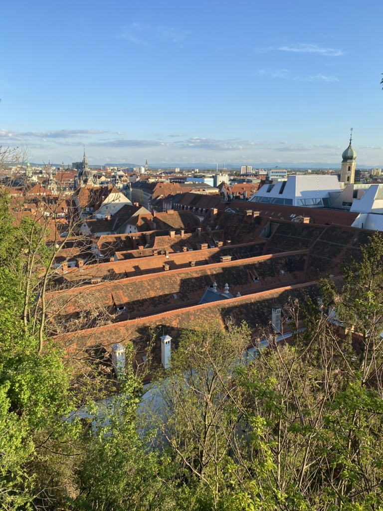
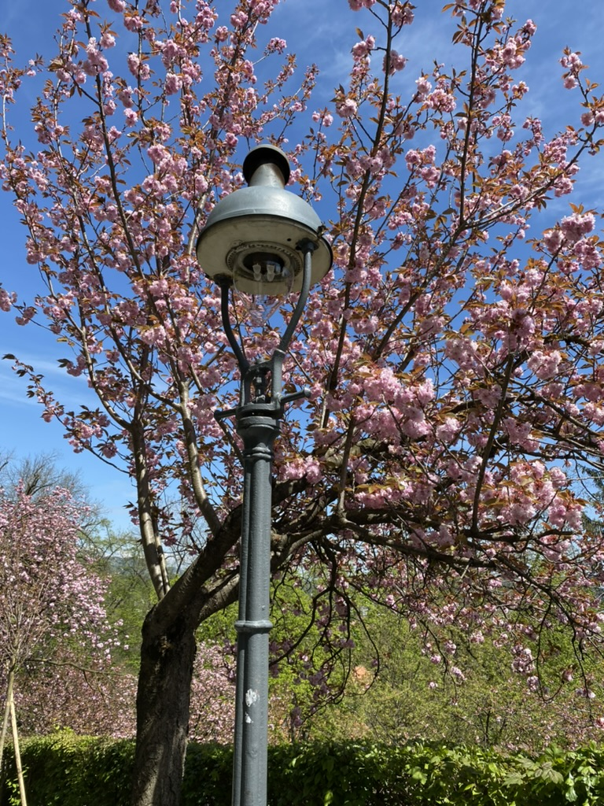
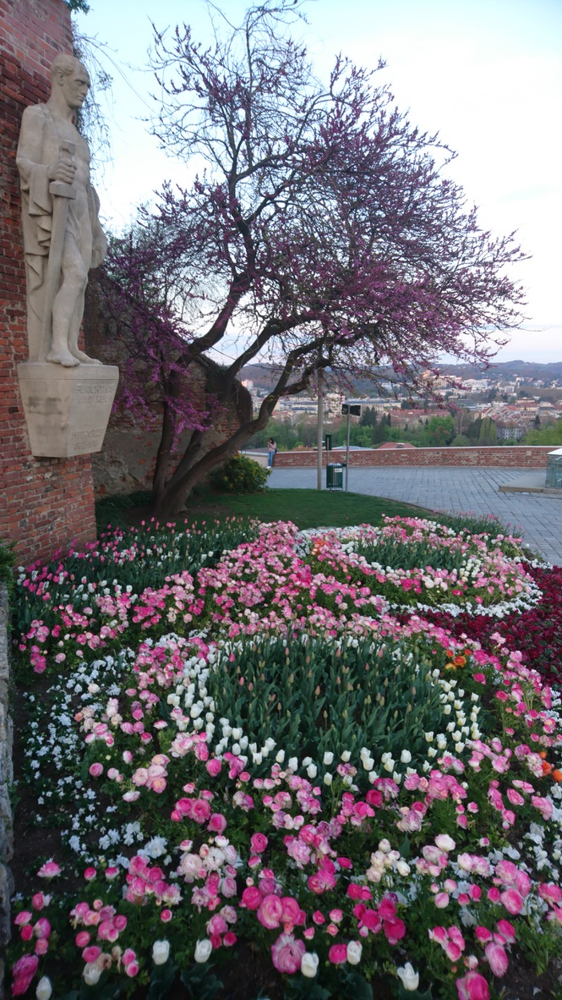
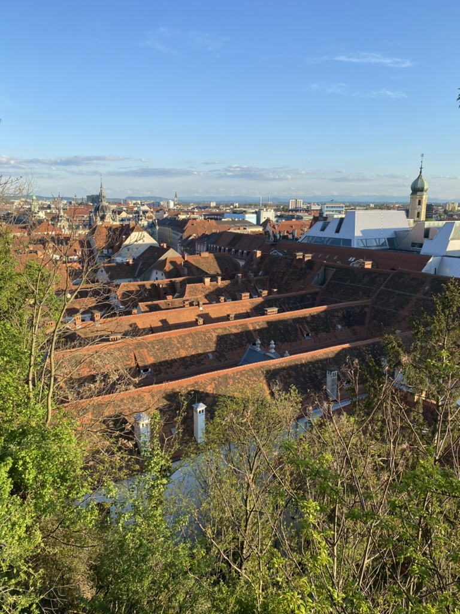
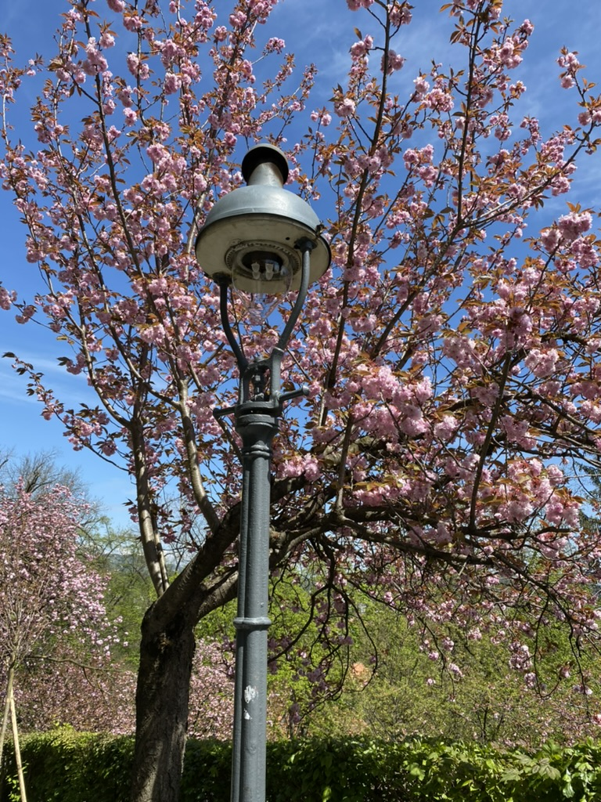
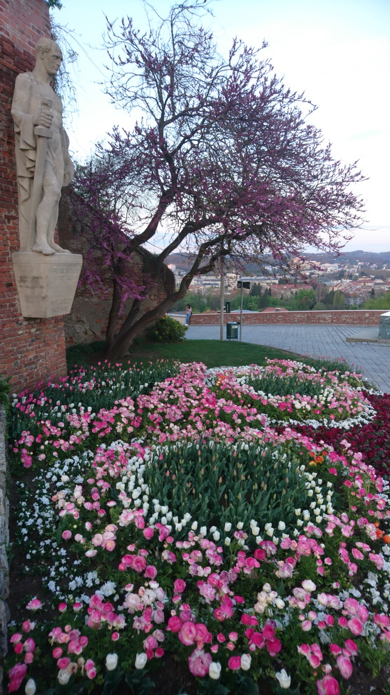
 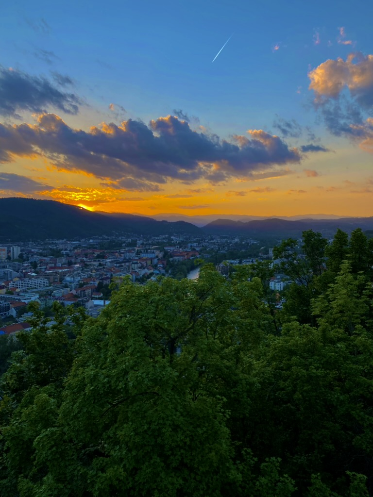
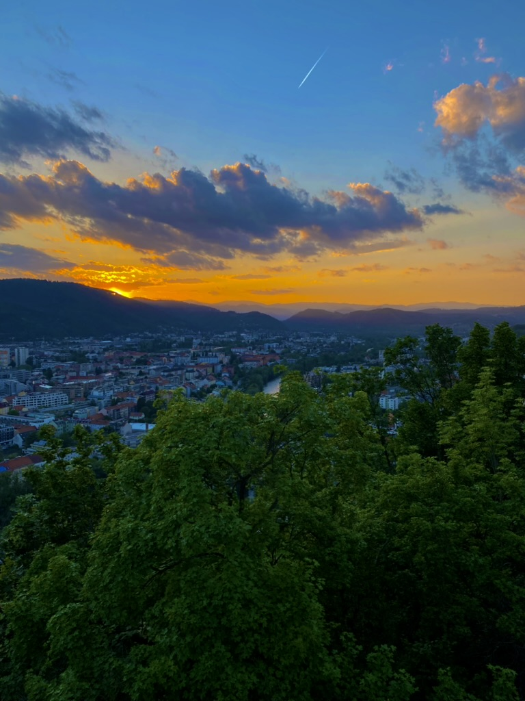
 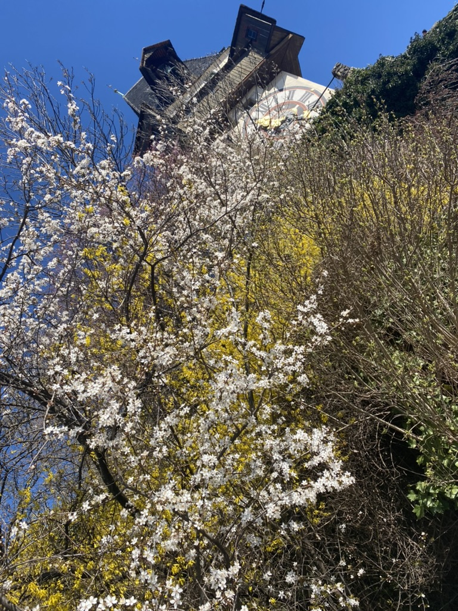
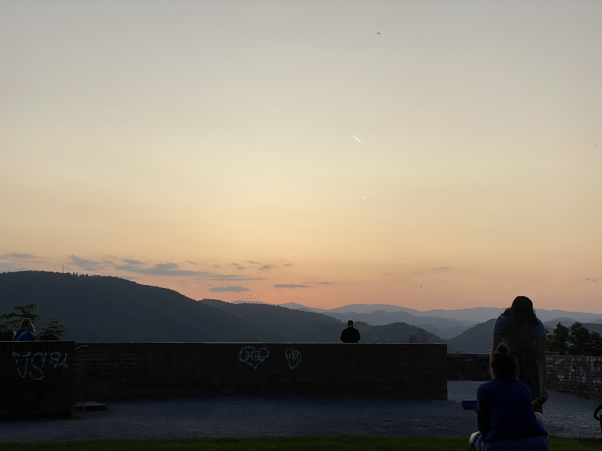
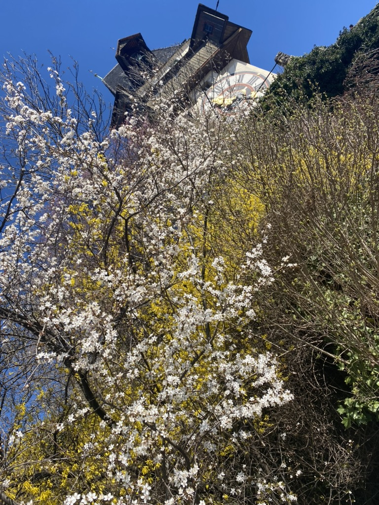
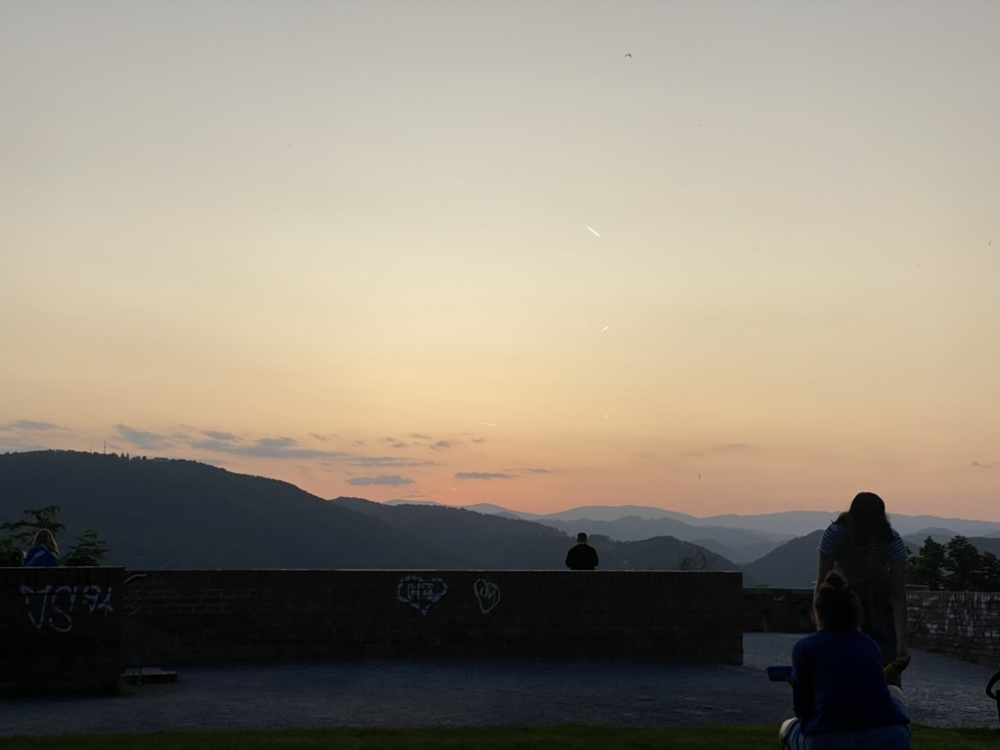


Der Grazer Schlossberg, das grüne Herz der Stadt, ist zu jeder Jahreszeit eine Ikone, doch im Frühling zeigt er sich von seiner besonders romantischen und farbenfrohen Seite. Wenn die ersten warmen Sonnenstrahlen die Stadt wecken, beginnt der Schlossberg zu blühen und zu sprießen, und verwandelt sich in ein Blütenparadies, das frisch Verliebte und solche, die ihre Liebe neu entfachen möchten, gleichermaßen verzaubert.
Überall sprießen bunte Blumen aus dem Boden, die Bäume schlagen aus und der Duft von frischem Grün liegt in der Luft. Die verschlungenen Pfade und versteckten Ecken des Berges, die "Hängenden Gärten" und die malerischen Ausblicke über die Dächer von Graz bieten unzählige Gelegenheiten für intime Momente und gemeinsame Entdeckungen. Ob bei einem gemütlichen Spaziergang entlang der alten Stadtmauern, einem Picknick mit Panoramablick oder einfach nur beim gemeinsamen Schweigen auf einer der vielen Bänke – der Schlossberg im Frühling ist der ideale Ort, um die Liebe zu feiern und sich vom Zauber der Natur inspirieren zu lassen.
Fun-Facts zum Schlossberg im Frühling:
- Blütenmeer im Frühjahr: Besonders die Bereiche um den Uhrturm und die sogenannten "Hängenden Gärten" sind im Frühling mit einer Vielfalt an blühenden Pflanzen übersät, die den Berg in ein farbenfrohes Kunstwerk verwandeln.
- Ein Ort für ewige Liebe: Es gibt zahlreiche "Liebesschlösser" an den Geländern und Zäunen des Schlossbergs, die von Paaren angebracht wurden, um ihre ewige Verbundenheit zu symbolisieren.
- Frühlingserwachen der Tierwelt: Mit dem Frühlingsbeginn erwacht auch die Tierwelt am Schlossberg. Halte Ausschau nach Eichhörnchen, bunten Vögeln und vielleicht sogar einem scheuen Fuchs.
- Die 260 Stufen des Glücks: Wer die Schlossbergstiege mit ihren 260 Stufen gemeinsam erklimmt, kann sich auf dem Gipfel mit einem atemberaubenden Blick belohnen und das Gefühl von "gemeinsam geschafft" genießen – ein kleines Abenteuer für frisch Verliebte.